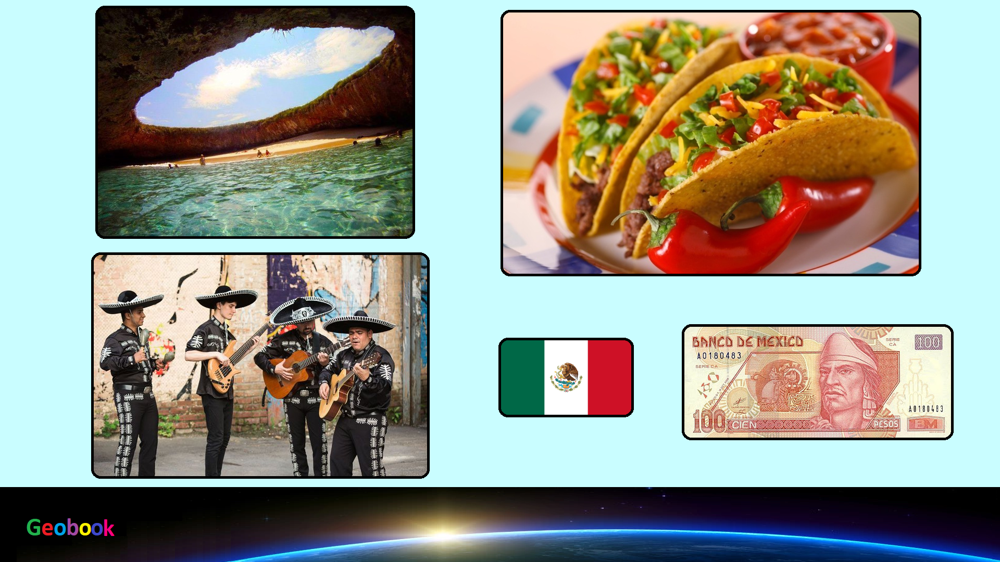

____
Люди
Численность населения - большая,
Средняя продолжительность жизни — 73.1 лет у мужчин, 78.9 лет у женщин,
Языки — Мексика относится к ряду стран, которые не имеют своего собственного национального языка. Так официальный язык Мексики — испанский.
Религия - Христианство в Мексике — самая распространённая религия в стране. По данным исследовательского центра Pew Research Center в 2010 году в Мексике проживало 107,78 млн христиан, которые составляли 95 % населения этой страны.
____
